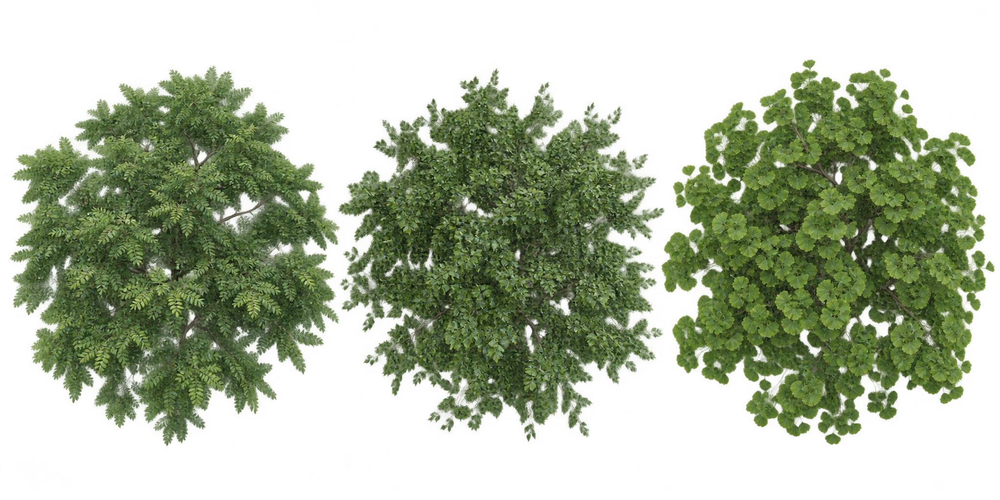
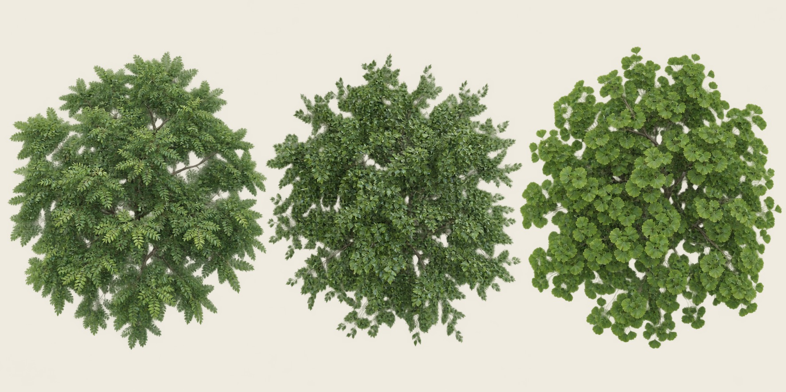
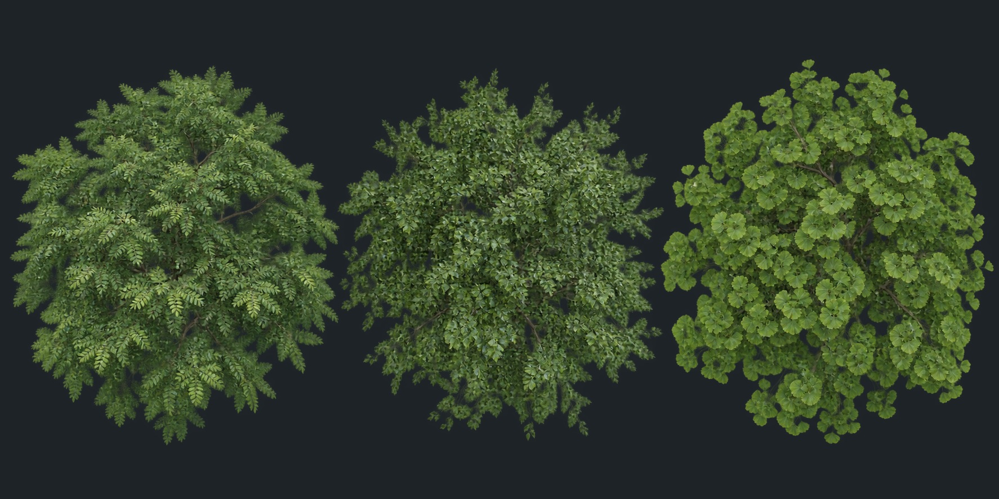
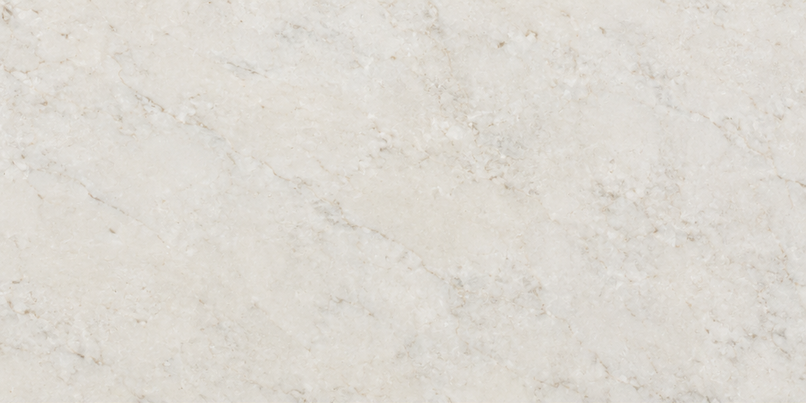
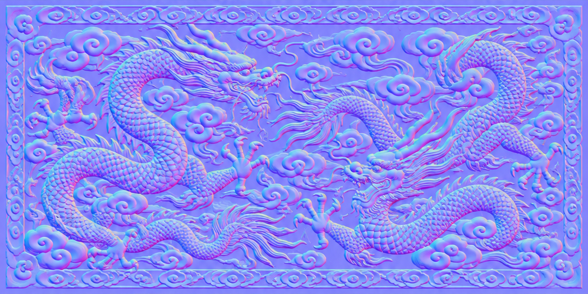
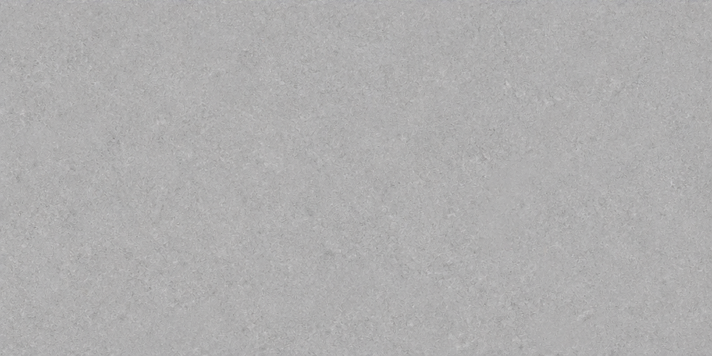
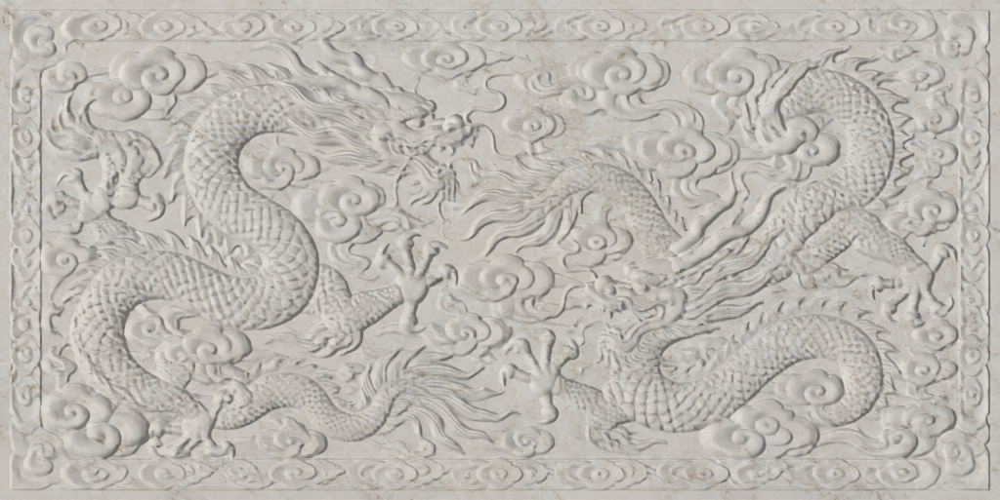
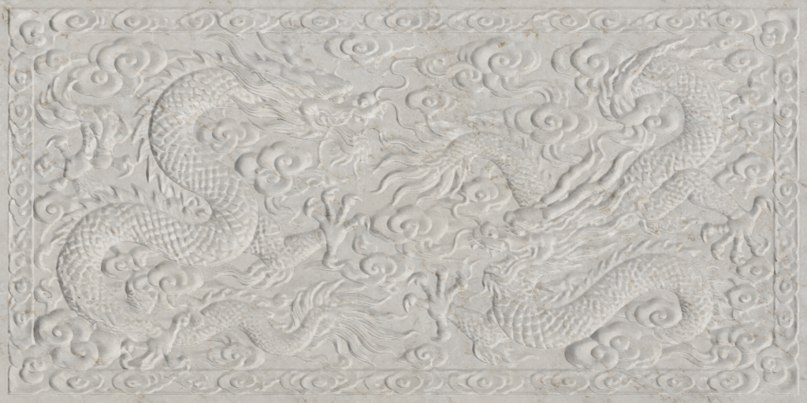

OsaB /933–934. Päätoimittajan arvioon. Kaikki toimitustekstuurit2048×1024; natiivikoot on kerrottu raportissa.
Pagodipuu · siperialainen jalava · neidonhiuspuu. Lajisto sovittu Tripo-tuottajan ehdotuksen mukaan.
Sisälehdissä on yhä varjostusta ja osittaista läpinäkyvyyttä. Täysin valotonta albedoa ei ole hyväksytty. Vertailu valmiisiin3D-puihin on avoin.

Vaalealla ja tummalla taustalla:


Kaiverruksen muoto on normaalikartassa. Alla olevat valokokeet ovat diagnooseja, eivät pelin kuvia.





Normaalikartan suunta ja vahvuus tarkistetaan vastaanottajan pelituonnissa.
Koko tarkistusraportti · Generointiohjeet · Lajisopimus ja07-referenssi